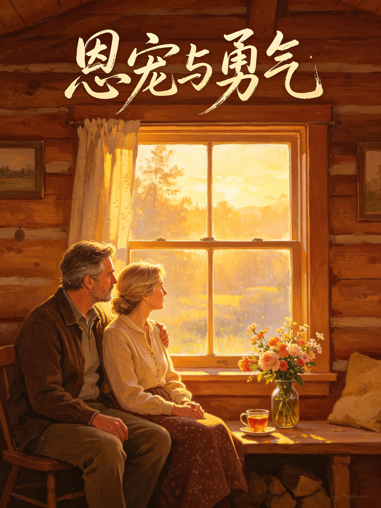

GRACE AND GRIT · KEN WILBER
恩宠与勇气
肯·威尔伯 著《超越死亡》胡因梦 译五年抗癌之书
1983 年的夏天，肯·威尔伯遇见了崔雅，一见钟情，两周后决定结婚。可就在婚礼之前，崔雅被发现患了乳癌。五年，他们一起走过手术、化疗、恐惧、愤怒，也一起走过静修、内观与深深的爱。被接受，就是恩宠；接受这一切，才是勇气。
🎮 本书包含 12 个互动体验：命运抉择、恐惧清单、情绪风暴、内观呼吸、自他交换、金句配对、人生五问、时间胶囊…… 读完，你会真正理解：痛苦不是惩罚，死亡不是失败，活着也不是一项奖赏。